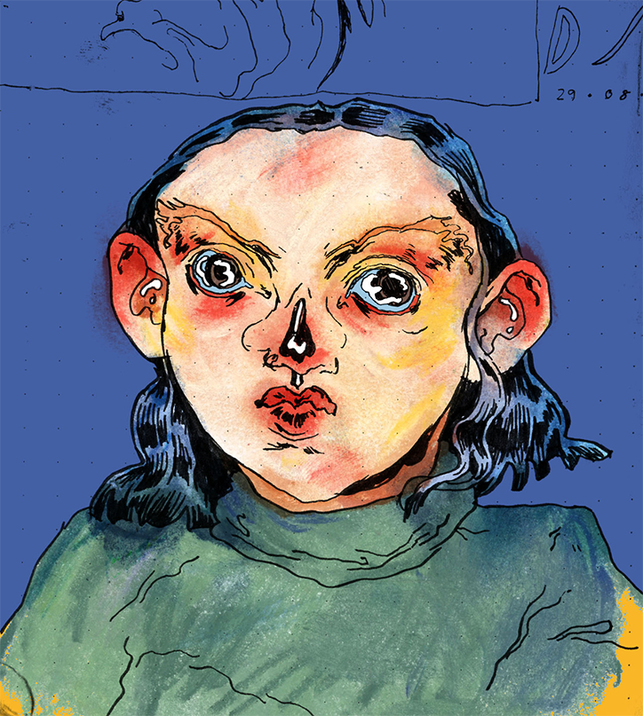

LA SENSUALITA E IL METAVERSO
“Mi è sempre interessato il germoglio dell’erotismo. Anche da giovane ragazza quando vedevo le mie prime immagini “esplicite”, come quelle delle carte telefoniche trovate nelle cabine, c’era qualcosa di così sgargiante e vago nel modo in cui il corpo della donna veniva presentato”.
Alice è una giovane illustratrice inglese, si è recentemente laureata in studi sull’illustrazione all’Università di Brighton e ora svolge attività di animazione e illustrazione freelance a Londra. La sua arte si concentra sul desiderio umano di decadenza, spesso toccando il tema del sesso e l’insicurezza tra i rapporti personali. Le animazioni e le illustrazioni di Alice Bloomfield esplorano l’interazione umana. Temi come il “sesso, l’amore non corrisposto e la tristezza” sono quelli che le interessano di più e sono quelli che ha studiato maggiormente nelle persone. Ha iniziato a disegnare da piccolissima e il suo stile e in continua evoluzione, così come le sue idee. Sul nostro sito troverete alcune delle stampe realizzate da Alice (CLICCA QUI) ma ora diamo spazio a voce a questa giovane artista, per conoscere meglio lei e la sua splendida arte.
L'adattabilità del lavoro di Alice è una testimonianza della sua spinta ad essere diversa. Un picco su Instagram di Alice e troverai costantemente un pozzo di ispirazione nelle sue opere: cosa sta facendo, come lo sta facendo e dove. Non sorprende che la sua prossima animazione in uscita questo autunno sia presso l'edificio Outernet in Tottenham Court Road a Londra. "Sono davvero entusiasta perché l'edificio ha una stanza di schermi a 360 gradi incredibilmente grandi, che coprono tutte le pareti e il soffitto", ci dice.
"Mi sono divertito molto a giocare con lo spazio e a progettare l'animazione per essere il più coinvolgente possibile." Come artista che ha sempre coperto una vasta gamma di personaggi nella sua arte, il passo verso la partecipazione immersiva per tutti gli spettatori è a dir poco eccitante. "Per questo progetto ho creato molti scatti panoramici a 360° in cui le animazioni fluiscono da una scena all'altra", spiega. "Non ho mai lavorato su nulla di simile prima, il che ha portato a molti tentativi ed errori, quindi non vedo l'ora di vedere come verrà fuori il tutto".